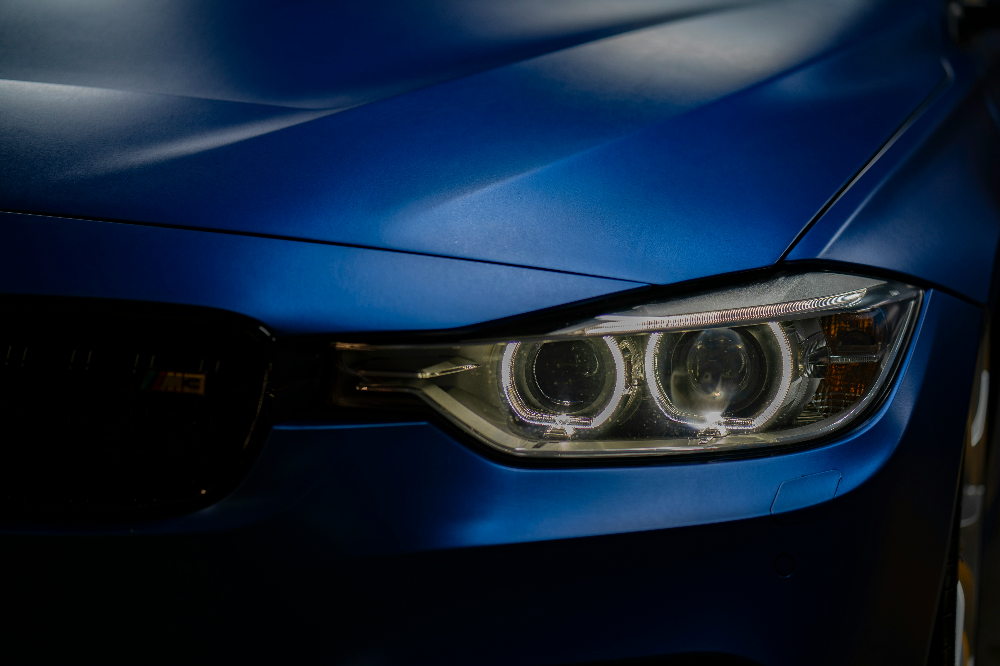

Poliranje farova
Vraćamo fabričku prozirnost oksidiranim i požutelim farovima, sa garancijom do 24 meseca.

Skeniranjem koda ostvarili ste pravo na 10% popusta na prvu uslugu kod Mojsilov Detailing-a. Popust iskoristite tako što nas kontaktirate i pomenete ovaj kod.
Poliranje farova
Dubinsko pranje automobila
Vraćamo fabričku prozirnost oksidiranim i požutelim farovima, sa garancijom do 24 meseca.
Kompletno čišćenje enterijera i eksterijera Karcher opremom, na vašoj adresi.
Sedišta, pod, nebo i gepek ekstrakcionim usisivačem i paročistačem, uz dezinfekciju.
Pranje karoserije, felni i guma, usisavanje enterijera i gepeka — brzo osveženje vozila.
Sofe, ugaone garniture, dušeci i stolice — uklanjamo fleke, prljavštinu i mirise.
Dodatni sloj zaštite i sjaja za farove, uz produženu garanciju do 24 meseca.
Cela teritorija grada Beograda i šira okolina — sve unutar označene granice na mapi.
Grad Beograd — sve opštine
Šira okolina Beograda
Detaljne cene, dodatne usluge i još fotografija pre i posle — sve na glavnom sajtu.